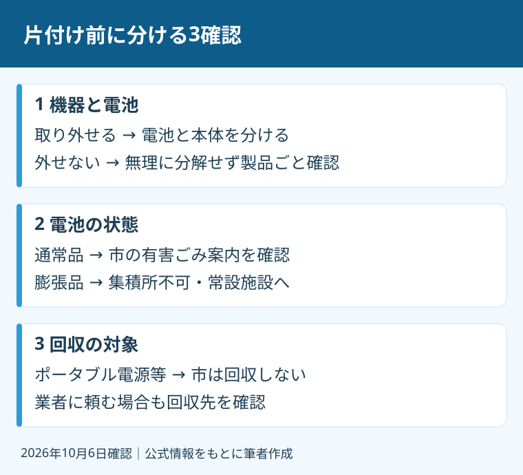

空き家の家財整理で、充電式の機器をひと袋に押し込むのは避けてください。売却の準備だからこそ、運び出す前の仕分けが要ります。家を空にする速さより、誰がどの機器をどこへ出すかを決めるほうが先です。
私、大石浩之（磐田市／不動産業）は、費用と段取りの側からこの問題を考えます。この記事は磐田市の家庭ごみ案内を基にした整理です。袋井市や森町の回収条件へ、そのまま置き換えることはできません。公式情報の確認日は2026年10月6日です。
2026年10～12月は、廃棄時の火災も対象
環境省は2026年9月11日の報道発表で、10～12月を「リチウムイオン電池による火災防止強化キャンペーン」の期間としました。特に11月を「リチウムイオン電池による火災防止月間」としています。対象は使用時だけでなく、廃棄時の火災防止です。
空き家の売却に使える補助金や、無料で家財を撤去する事業の案内ではありません。季節の呼びかけを、処分費用が免除される制度と取り違えないでください。具体的な捨て方は、家がある自治体の案内で確認します。
磐田市の「充電式小型家電の出し方」は、携帯式扇風機、電動歯ブラシ、電気カミソリ、携帯ゲーム機、コードレス掃除機などを例示しています。電動工具のバッテリーも対象の例です。電池だけの箱を探せば済むわけではありません。
確認1：本体から電池を外せるか
磐田市の「有害ごみの出し方」は、外せる充電式電池を取り外し、本体を金物・小型電化製品で出すと案内しています。電池を外せない場合は、製品ごと有害ごみで出す扱いです。有害ごみとは、市の分別区分の名前です。
同じ市の案内では、金物・小型電化製品と有害ごみは収集日が同じでも、袋を分けます。ここは意外に見落としやすいところです。「同じ日に出せる」と「同じ袋で出せる」は別です。見た目が普通の家電でも、内蔵電池が残る機器は分けます。
端子が露出した電池について、市はガムテープ等でなるべく絶縁するよう案内しています。絶縁は、電気を通す接点を覆うことです。取り外せるか分からない機器は、型番や取扱説明書を確認します。自己流でこじ開ける手順を、片付けの前提にはしません。
書類や写真の保管は遺品整理で残す書類と見積りの確認で整理しています。捨てない物の確保と、充電式機器の分別は別の作業です。両方を依頼内容に書くと、家族と業者の認識を合わせやすくなります。

確認2：膨らんだ電池を通常品と分ける
磐田市は、膨らんだ充電式電池・バッテリーを集積所へ出せないと明記しています。常設のリサイクルステーションへ持ち込む案内です。通常の有害ごみと同じ回収方法だと考えないでください。
市の通常品の案内では、集積所の缶、コンテナ、指定袋などを使います。具体的な出し方は集積所によって異なり、自治会や管理会社への問い合わせが必要です。遠方のご家族が、以前住んでいた頃の袋や出し方を記憶だけで選ぶのは避けたいところです。
私は、変形や破損に気付いた時点で、運び出す作業をいったん止める方針です。市のページが明示しているのは膨張品の回収先です。破損品や発熱している機器の搬入条件まで、同じと断定できません。状態を伝え、市や販売店に扱い方を確認します。
私は、見ただけで安全を判定できるとは考えていません。目立った膨らみがなければ問題ない、と言い切ることにも迷いがあります。ご家族に求めるのは危険度の診断ではなく、いつもと違う状態を伝えることです。片付けを頼む前に、写真と型番が役立ちます。
確認3：市が回収する機器かを確かめる
磐田市の「有害ごみの出し方」は、自転車や自動車のバッテリー、ポータブル電源を市では回収しないとしています。販売店へ問い合わせる扱いです。持ち運べる電源を、すべてモバイルバッテリーと同じ区分で出すことはできません。
通常の充電式小型家電は、地域の有害ごみとして出す方法と、常設のリサイクルステーションへ持ち込む方法があります。電池部分のみをリサイクル協力店へ持ち込む案内もあります。店ごとの受入条件を、全国共通とは決め付けないでください。
回収先の営業時間や、本人以外が運ぶ場合の扱いは、出発前に確認します。家庭ごみの案内があるからといって、片付け業者が同じ方法で持ち込めるとは限りません。家庭で出す場合と、業者へ委託する場合の条件を分けて問い合わせます。
良い点は回収経路、注文は見積りの区分
私は、磐田市が取り外せない充電式小型家電の出し方まで示している点を評価します。電池を外せないご家族も、機器を壊す前に回収先を確認できます。
磐田市の案内では、2025年10月から通常の充電式小型家電を地域の集積所に有害ごみとして出せるようになりました。常設のリサイクルステーションへの持ち込みも案内しています。
私も、地域で出せる方法と常設施設を選べる点を評価します。実家に行ける日と収集日が合わないご家族にとって、日程を組む材料になるからです。費用の総額だけでなく、再訪が何回必要かという段取りにもつながります。
その上で、私が片付けの見積りに注文したいのは「家財一式」の中身です。電池内蔵機器の確認、通常品の処分、市で回収しない機器の処分を区分してほしい。追加費用が出る場合は、作業前に連絡する条件まで書いてもらいます。袋に入った後では確認が難しくなります。
エアコンは別の回収制度と費用が関係します。家電だから一括で同じ処分先、とはしません。空き家のエアコン撤去・運搬・再資源化の費用も合わせて見て、見積りの対象を区別してください。
私なら、売却日より先に機器一覧を作る
空き家の片付けを依頼する前に、充電式機器の名前、型番、電池の状態、回収先を一枚に控えるのが私の提案です。親の施設入居で実家が空いた場合でも、売却するかどうかと分別の確認を同時に決める必要はありません。
私はこう考えます。実家へ行ける家族が限られるなら、最初の訪問では廊下に荷物を積むより、棚や引き出しの機器を撮影します。写真を見ながら「誰が市へ聞くか」「誰が業者へ送るか」を家族で決める。これは相談の実話ではなく、私が勧める段取りです。処分を急ぐ気持ちがあっても、回収先の返事が来るまで仕分けを保留できる形にしたいのです。
今日できる確認は、コードレス機器を一つ選び、電池が外せるかを説明書で調べることです。続けて、市の案内で通常品と膨張品の回収先を確認します。受入先が未確認なら、一覧には空欄のまま残します。想像で「処分可」と埋めません。
片付けの途中でも、家の安全設備を全部撤去する話とは分けて考えます。空き家の住宅用火災警報器と10年の交換目安は、処分対象を決める前の補助資料です。私は、家族が困らない売却のため、機器の一覧から案内します。